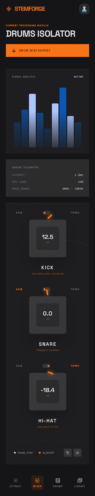
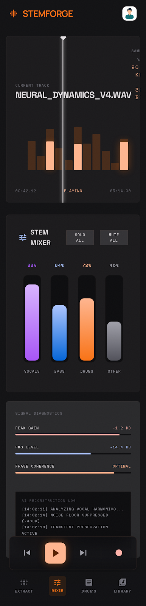
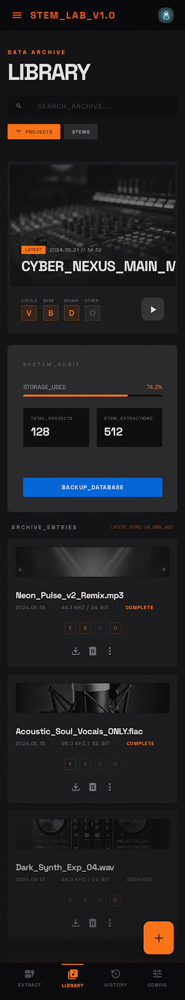

The Future of Audio Stem Splitting is Here
Stitch is a powerful audio production tool that allows you to split your audio into individual stems, giving you complete control over your mix.
Try Stitch NowStitch is a powerful audio production tool that allows you to split your audio into individual stems, giving you complete control over your mix.
Try Stitch Now
Isolate drums from any audio file with the click of a button.

Process signals with a variety of effects, including reverb, delay, and compression.

Save your processed audio to your library for later use.